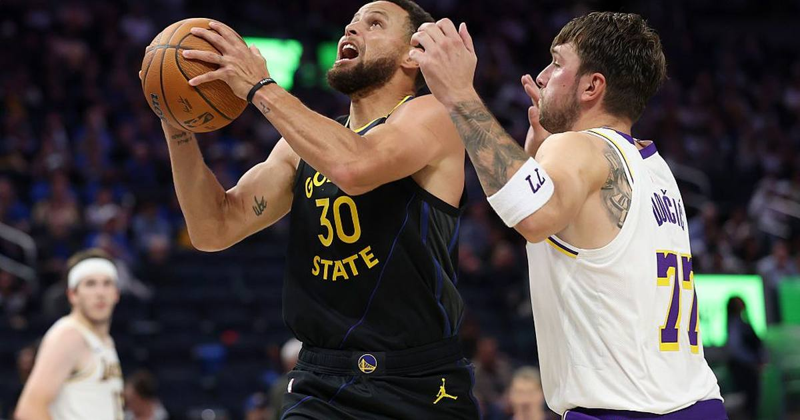

Warriors Erase a 25-Point Deficit and Stun the Lakers 112-95 in a Historic NBA Cup Comeback
Down 38-15 after one quarter, Golden State flipped the game with a 38-15 second quarter and ran away from the Lakers 112-95 — the largest margin of victory in the shot-clock era for a team trailing by 20-plus after the first.

For twelve minutes on Friday night, Luka Doncic made it look like a blowout. Then the Golden State Warriors made history.
Stephen Curry scored 31 points and the Warriors erased an early 25-point deficit to beat the Los Angeles Lakers 112-95 at Chase Center in San Francisco, in both teams' Emirates NBA Cup opener. It was the largest margin of victory in the shot-clock era for a team that trailed by 20 or more points at the end of the first quarter.
The first quarter belonged to Luka
Doncic was unstoppable out of the gate: 21 points on 7-of-12 shooting with five three-pointers, five assists and two steals in the first quarter alone, as Los Angeles raced to a 38-15 lead. The Lakers eventually stretched the advantage to 25 points.
Then the game flipped — violently. Golden State answered with a 38-15 second quarter of its own, the exact same margin, to reach halftime tied at 53. It was the first time in the shot-clock era that a team trailed by 23 or more points after the first quarter and recovered to tie or lead by halftime.
The second half belonged to Curry
Curry hit a three over Doncic midway through the third, and the Warriors finished the quarter on a 22-8 run before scoring the first 11 points of the fourth — turning a nine-point deficit into a 16-point lead and effectively ending it. Curry finished with 31 points, six assists and four rebounds, hitting eight of his 14 three-point attempts, and passed Dominique Wilkins (26,668 points) for 18th place on the NBA's all-time scoring list.
Brandin Podziemski added 21 points with four three-pointers, De'Anthony Melton scored 16 and George Niang 11 as Golden State's bench chipped in 50 points. Doncic finished with a game-high 37 points, seven rebounds and five assists — but scored just 16 over the final three quarters after his 21-point opening burst. Austin Reaves added 21 for Los Angeles.
Why this one matters
The previous best in this category dated to March 4, 1976, when these same Warriors trailed the Bulls 41-18 after one quarter and won by 14. Friday's 17-point win blew past that. It was also Golden State's third straight victory after an 0-3 start, and instant revenge for the season-opening loss to these same Lakers in Los Angeles.
The Lakers, meanwhile, learned the modern lesson the hard way: a 25-point lead built on a hot quarter is not what it used to be. Not against Curry.
Sources: The Score (AP), Reuters
Gear up: Fanatics